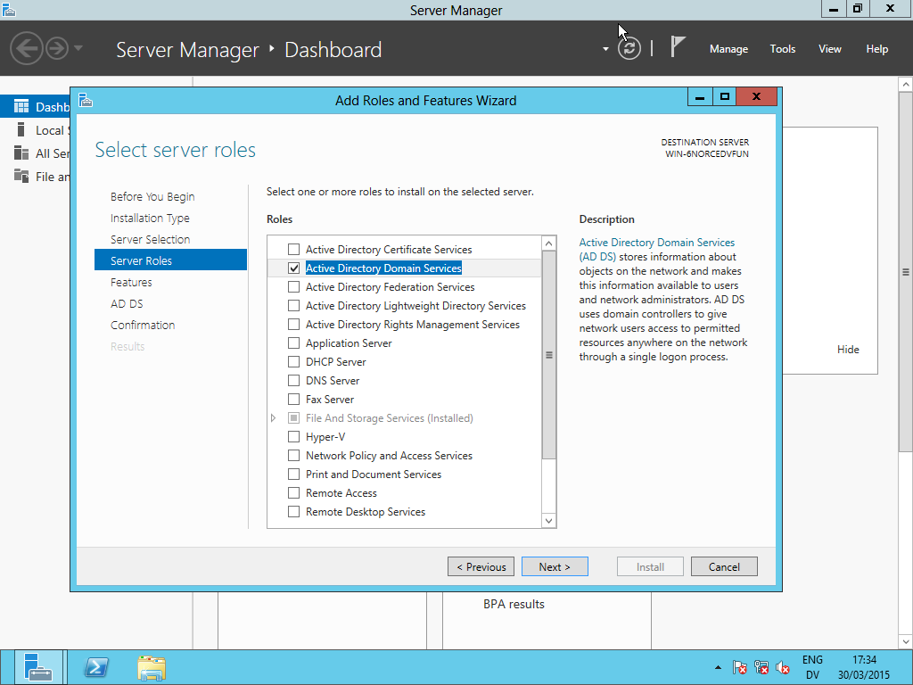
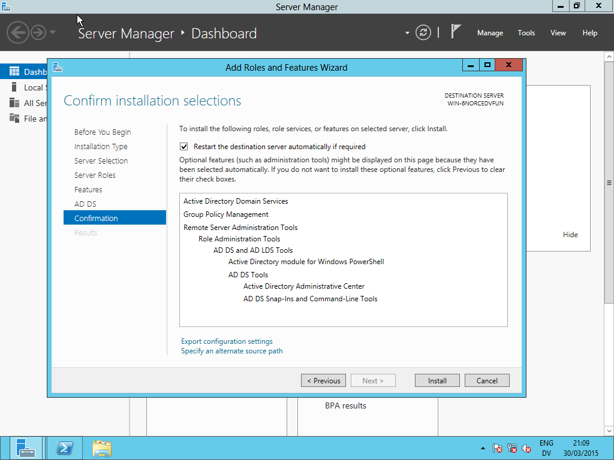
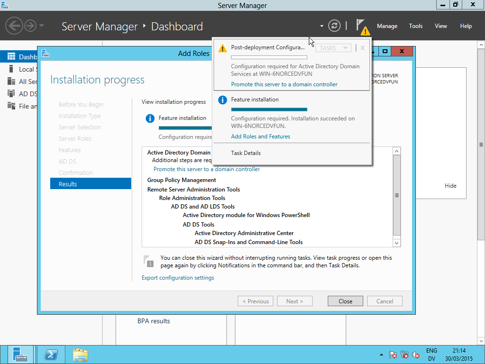
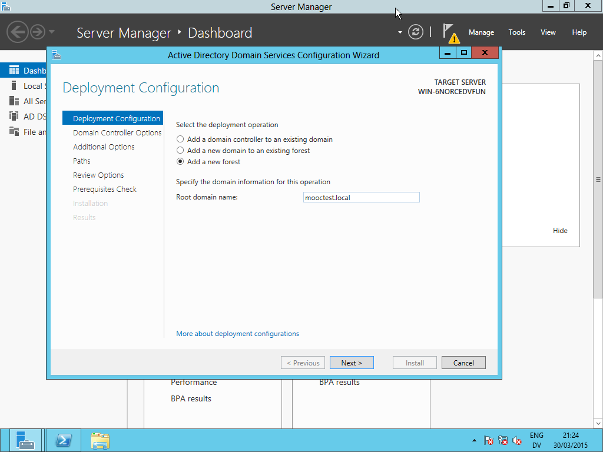
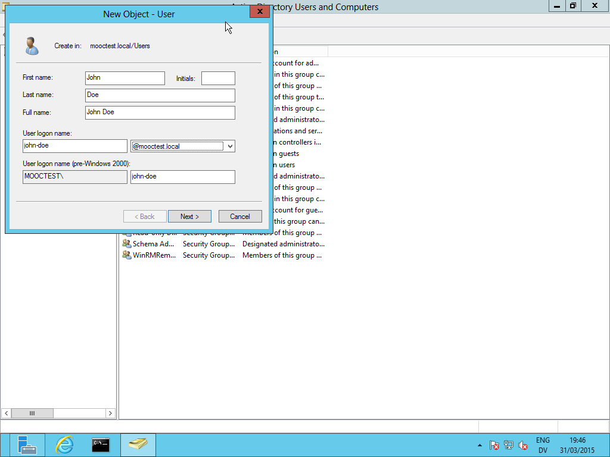
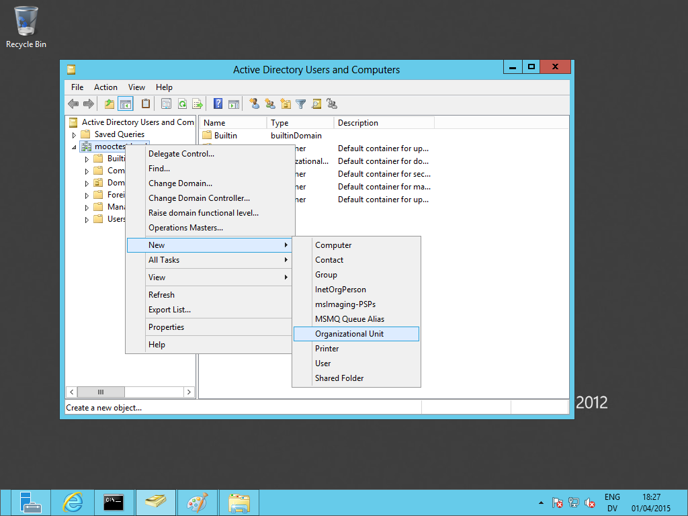
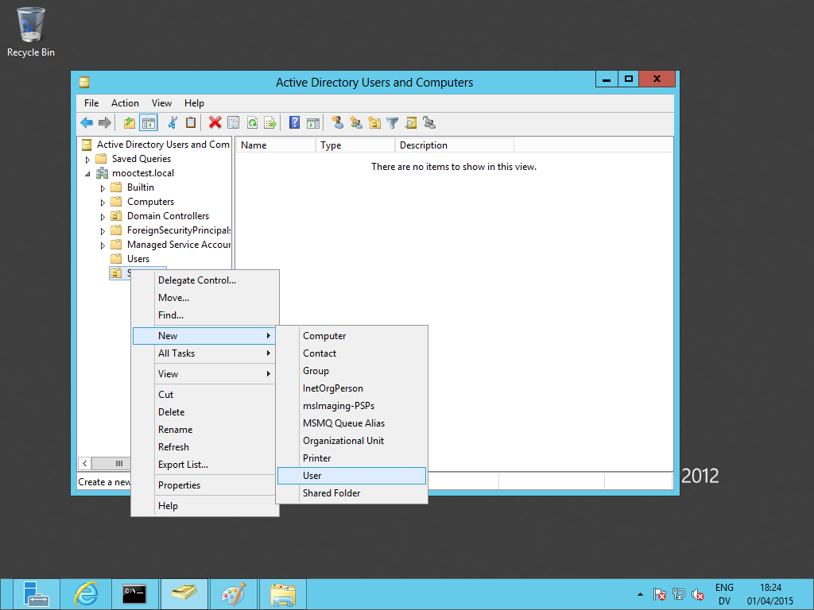
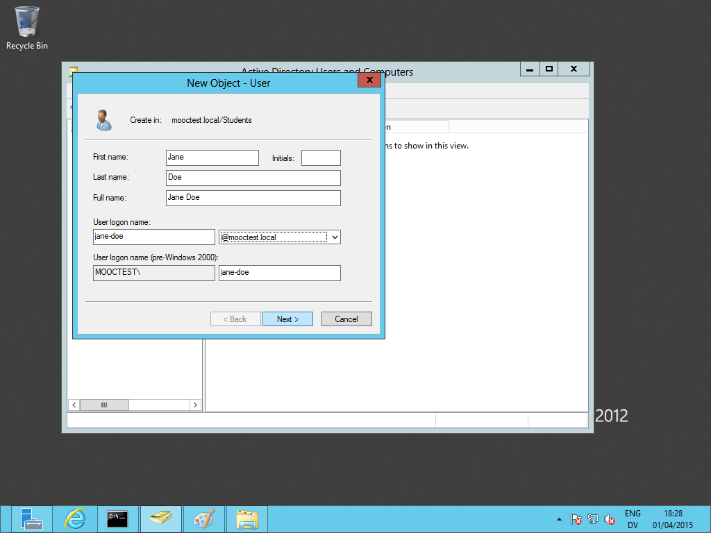
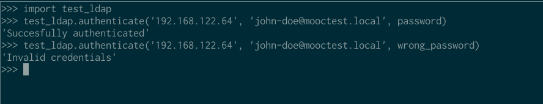

For a school project, we have to implement LDAP authentication in edX. edX is buildt on Django and Python, so I decided to explore how to implement LDAP with Python.
I’m not a Microsoft fan, but to mirror the deployment set-up, we decided to use Microsoft Server with Active Directory.

The Microsoft Server
I grabbed a copy of Microsoft Server 2012 from DreamSpark/OnTheHub for free (yay student benefits!) and after some struggling, managed to get it running on KVM.
Install needed roles
First, install the Active Directory Domain Services role:


After installing the role, promote the server to the domain controller:


I did not set the server to provide DNS (under Domain Controller Options). I’ll set a static IP later, for now, I’ll just use the provided dynamic IP.
I still had to install the VirtIO Ethernet driver, you can find this on the VirtIO drivers iso that you probably used to install the HDD VirtIO drivers during the installation. Right-click on NETKVM.INF and choose Install.
Note that you need not install Active Directory Lightweight Directory Services; you can query Active Directory just fine.
Testing it out
If you’re on a debian machine, you can use sudo apt-get install python-ldap to install the Python LDAP package. That way, you can import ldap from the console anywhere. In the next section, we will install python-ldap in a virtual environment.
To try it out, grab the current IP of the Windows server (ipconfig /all in cmd.exe) and try this:
$ python
Python 2.7.9 (default, Mar 1 2015, 12:57:24)
[GCC 4.9.2] on linux2
Type "help", "copyright", "credits" or "license" for more information.
>>> import ldap
>>> conn = ldap.initialize('ldap://192.168.122.64') # the IP address of the Windows Server
>>> conn.protocol_version = 3
>>> conn.set_option(ldap.OPT_REFERRALS, 0)
Now try to authenticate:
>>> conn.simple_bind_s('Administrator@mooctest.local', 'yourpassword') # an account to test
(97, [], 2, [])
This is what happens when specifying wrong credentials:
>>> conn.simple_bind_s('Administrator@mooctest.local', 'wrongpassword')
Traceback (most recent call last):
File "<stdin>", line 1, in <module>
File "/usr/lib/python2.7/dist-packages/ldap/ldapobject.py", line 208, in simple_bind_s
resp_type, resp_data, resp_msgid, resp_ctrls = self.result3(msgid,all=1,timeout=self.timeout)
File "/usr/lib/python2.7/dist-packages/ldap/ldapobject.py", line 469, in result3
resp_ctrl_classes=resp_ctrl_classes
File "/usr/lib/python2.7/dist-packages/ldap/ldapobject.py", line 476, in result4
ldap_result = self._ldap_call(self._l.result4,msgid,all,timeout,add_ctrls,add_intermediates,add_extop)
File "/usr/lib/python2.7/dist-packages/ldap/ldapobject.py", line 99, in _ldap_call
result = func(*args,**kwargs)
ldap.INVALID_CREDENTIALS: {'info': '80090308: LdapErr: DSID-0C0903C5, comment: AcceptSecurityContext error, data 52e, v23f0', 'desc': 'Invalid credentials'}
This was surprisingly easy so far! Let’s see how we can use more of the Python LDAP API.
Using Python’s LDAP module
Getting set up
We’ll start a new project for this using virtualenv. You will need to install libldap2-dev and libsasl2-dev to install python-ldap, see this answer for more information.
$ virtualenv python-ldap # create a new virtual environment
$ cd python-ldap
$ . bin/activate # activate the virtual environment
$ sudo apt-get install libldap2-dev libsasl2-dev # headers needed for installing python-ldap
$ pip install python-ldap
A test script
Create a simple test script to verify LDAP still works from Python (it should):
#!/usr/bin/env python
import ldap
def authenticate(address, username, password):
conn = ldap.initialize('ldap://' + address)
conn.protocol_version = 3
conn.set_option(ldap.OPT_REFERRALS, 0)
return conn.simple_bind_s(username, password)
Try it from the interpreter using import test_ldap and test_ldap.authenticate():
$ python
Python 2.7.9 (default, Mar 1 2015, 12:57:24)
[GCC 4.9.2] on linux2
Type "help", "copyright", "credits" or "license" for more information.
>>> import test_ldap
>>> test_ldap.authenticate('192.168.122.64', 'administrator@mooctest.local', 'password')
Creating a new user account
Let’s try creating a new user account. On the server, go to Active Directory Users and Computers, then go to Users. Right-click, choose New > User


Observe that this works fine:
>>> test_ldap.authenticate('192.168.122.64', 'john-doe@mooctest.local', 'password')
(97, [], 1, [])
We’ll use the John Doe and the Jane Doe accounts (see the next section) for testing.
Creating an organizational unit
Create a new organizational unit. I’ll call mine Students.

Now create a new user within that account. I’ll call her Jane Doe. We’ll use her to test how to bind to users in OUs.


Exploring the API
Let’s look at some commonly used methods and where to find documentation
Resources
These are some of the resources I found helpful in exploring python-ldap:
- The python-ldap site
- The online python-ldap docs
- The python-ldap tag on StackOverflow
- The Python LDAP Applications series on PacktPub (part 2, part 3, part 4)
- Python LDAP samples by Grotan
Asynchronous methods
Methods not ending in _s are asynchronous methods. Those that do end in _s are synchronous.
ldap.initialize()
The first method you need to use is ldap.initialize. It takes one parameter, the LDAP URL to connect to:
>>> ldap.initialize('ldap://192.168.100.50')
<ldap.ldapobject.SimpleLDAPObject instance at 0x7f6e626d9a70>
This returns a SimpleLDAPObject instance. We want to save this in a variable so we can do something with it.
>>> con = ldap.initialize('ldap://192.168.122.64')
>>>
Be aware that initializing does not connect to the server yet, you won’t get any errors if you specify a server that doesn’t exist (you will once you try to bind to it).
ldap.*bind()
These methods are used to bind to a server. The methods are bind, bind_s, sasl_interactive_bind_s, simple_bind and simple_bind_s.
You won’t ever need to use bind and bind_s, since only simply authentication is supported at the moment. You can use bind/bind_s, but you’d have to provide ldap.AUTH_SIMPLE as the third parameter all the time.
For sasl_interactive_bind_s, which I won’t cover, you can look here.
I’ll only cover simple_bind_s here. As mentioned before, simple_bind is the same, but asynchronous. This is what the documentation says about it:
LDAPObject.simple_bind_s([who=''[, cred='']]) -> None
After an LDAP object is created, and before any other operations can be attempted over the connection, a bind operation must be performed.
simple_bind_s takes two parameters: who, the username, and cred, the password.
>>> con.simple_bind_s('john-doe@mooctest.local', 'password')
(97, [], 4, [])
>>> con.simple_bind_s('john-doe@mooctest.local', 'wrongpassword')
Traceback (most recent call last):
File "<stdin>", line 1, in <module>
File "/usr/lib/python2.7/dist-packages/ldap/ldapobject.py", line 208, in simple_bind_s
resp_type, resp_data, resp_msgid, resp_ctrls = self.result3(msgid,all=1,timeout=self.timeout)
File "/usr/lib/python2.7/dist-packages/ldap/ldapobject.py", line 469, in result3
resp_ctrl_classes=resp_ctrl_classes
File "/usr/lib/python2.7/dist-packages/ldap/ldapobject.py", line 476, in result4
ldap_result = self._ldap_call(self._l.result4,msgid,all,timeout,add_ctrls,add_intermediates,add_extop)
File "/usr/lib/python2.7/dist-packages/ldap/ldapobject.py", line 99, in _ldap_call
result = func(*args,**kwargs)
ldap.INVALID_CREDENTIALS: {'info': '80090308: LdapErr: DSID-0C0903C5, comment: AcceptSecurityContext error, data 52e, v23f0', 'desc': 'Invalid credentials'}
We see that binding successfully returns a weird tuple, while providing a wrong password throws an exception. Looking into the source shows that it returns this:
return resp_type, resp_data, resp_msgid, resp_ctrls
…That doesn’t help a whole lot. But here’s what I figured out:
resp_type: the result typeresp_data: data returned by the LDAP serverresp_msgid: an identifier, this increases every messages. In this case, it’s4, the next message will have aresp_msgidof5. This is important for asynchronous methods, as we’ll see laterresp_ctrls: no idea.
Microsoft’s LDAP Error Codes says 0x61 (97) means The referral limit was exceeded. but RFC 2251 says it should be treated as an unknown error code, as it’s not in the range.
This post on the mailing list sheds some light on the result type:
The 97 is not the LDAP result code. It's the result type ldap.RES_BIND.
Normally you don't have to look at the results returned by
LDAPObject.simple_bind_s() (unless you want to extract the bind response
controls).
If the LDAP result code is not 0 the accompanying exception is raised like
ldap.INVALID_CREDENTIALS in your example.
So exceptions. For a wrong username or password, ldap.INVALID_CREDENTIALS will be raised. Another common one is ldap.SERVER_DOWN, which happened to me when I hadn’t used the connection in a while on the REPL. Re-initializing the connection did the trick. So trying to bind to the server should look like this (adapted from here):
try:
l.simple_bind_s('john-doe@mooctest.local', 'password')
except ldap.INVALID_CREDENTIALS:
print("Your username or password is incorrect.")
except ldap.SERVER_DOWN:
print("The server appears to be down.")
except ldap.LDAPError, e:
if type(e.message) == dict and e.message.has_key('desc'):
print e.message['desc']
else:
print e
If we don’t receive any messages, we know that we bound (thus authenticated) successfully!
ldap.unbind*()
Unbinding will disconnect from the LDAP server and free up resources. It will also mark the LDAPObject invalid, and all new operations and it will fail. Yes, that includes new bindings:
>>> con.unbind_s()
>>> con.simple_bind_s('john-doe@mooctest.local', '123')
Traceback (most recent call last):
File "<stdin>", line 1, in <module>
File "/usr/lib/python2.7/dist-packages/ldap/ldapobject.py", line 207, in simple_bind_s
msgid = self.simple_bind(who,cred,serverctrls,clientctrls)
File "/usr/lib/python2.7/dist-packages/ldap/ldapobject.py", line 201, in simple_bind
return self._ldap_call(self._l.simple_bind,who,cred,RequestControlTuples(serverctrls),RequestControlTuples(clientctrls))
File "/usr/lib/python2.7/dist-packages/ldap/ldapobject.py", line 99, in _ldap_call
result = func(*args,**kwargs)
ldap.LDAPError: LDAP connection invalid
You have to initialize the server again to bind again.
Final script
#!/usr/bin/env python
import ldap
def authenticate(address, username, password):
conn = ldap.initialize('ldap://' + address)
conn.protocol_version = 3
conn.set_option(ldap.OPT_REFERRALS, 0)
try:
result = conn.simple_bind_s(username, password)
except ldap.INVALID_CREDENTIALS:
return "Invalid credentials"
except ldap.SERVER_DOWN:
return "Server down"
except ldap.LDAPError, e:
if type(e.message) == dict and e.message.has_key('desc'):
return "Other LDAP error: " + e.message['desc']
else:
return "Other LDAP error: " + e
finally:
conn.unbind_s()
return "Succesfully authenticated"
Conclusion

This post was an exploration into Python, Active Directory, and if they work together. Turns out they do, without a lot of configuration! I hope to use this in a future Django project. I was only really interested in authentication, but if you want to try more things (such as searching, modifying passwords, …) you can refer to the Resources section above. For example, searching in the Students OU we created earlier:
>>> import ldap
>>> import ldif
>>> ldif_writer = ldif.LDIFWriter(sys.stdout)
>>> basedn = = "OU=students,DC=mooctest,DC=local"
>>> results = con.search_s(basedn,ldap.SCOPE_SUBTREE,"(cn=*)")
>>> for dn,entry in results:
... ldif_writer.unparse(dn,entry)
...
dn: CN=Jane Doe,OU=Students,DC=mooctest,DC=local
accountExpires: 9223372036854775807
badPasswordTime: 130723115748598376
badPwdCount: 1
cn: Jane Doe
codePage: 0
countryCode: 0
dSCorePropagationData: 16010101000000.0Z
displayName: Jane Doe
distinguishedName: CN=Jane Doe,OU=Students,DC=mooctest,DC=local
givenName: Jane
instanceType: 4
lastLogoff: 0
lastLogon: 0
lastLogonTimestamp: 130723115727192242
logonCount: 0
name: Jane Doe
objectCategory: CN=Person,CN=Schema,CN=Configuration,DC=mooctest,DC=local
objectClass: top
objectClass: person
objectClass: organizationalPerson
objectClass: user
objectGUID:: E8uawUM+DkyLzjIQE5CSHQ==
objectSid:: AQUAAAAAAAUVAAAAyQ9OG3xBa/Vl4s3bVQQAAA==
primaryGroupID: 513
pwdLastSet: 130723115588128828
sAMAccountName: jane-doe
sAMAccountType: 805306368
sn: Doe
uSNChanged: 20571
uSNCreated: 20565
userAccountControl: 512